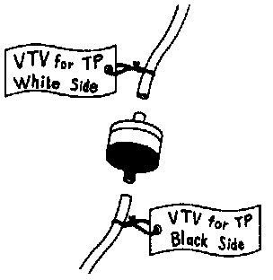

Tune-up and Engine Performance Checks: Service Precautions
TUNE-UP SERVICE PRECAUTIONS

- Tag or mark vacuum hoses before disconnecting them. After completing a job, double check that the vacuum hoses are properly connected.

- To disconnect vacuum hoses, pull on the end, not the middle of the hose.

- To pull apart electrical connectors, pull on the connector itself, not the wires.
- Before disconnecting pressurized fuel lines, always perform Fuel Pressure Release procedure in order to reduce the risk of fire and personal injury.
- When replacing fuel filters, always check all affected lines and fittings for leaks.
- Never drain or store gasoline or diesel fuel in an open container, due to the possibility of fire or explosion.
- To prevent serious burns:
- Avoid contact with hot metal parts.
- Do not remove the radiator cap when the engine is hot.
- Before servicing the vehicle:
- Protect fenders, upholstery and carpeting with appropriate covers.
- Take caution that keys, buckles, or buttons do not scratch paint.

- Do not operate the engine indoors without proper ventilation.
- Do not smoke while working on the vehicle.